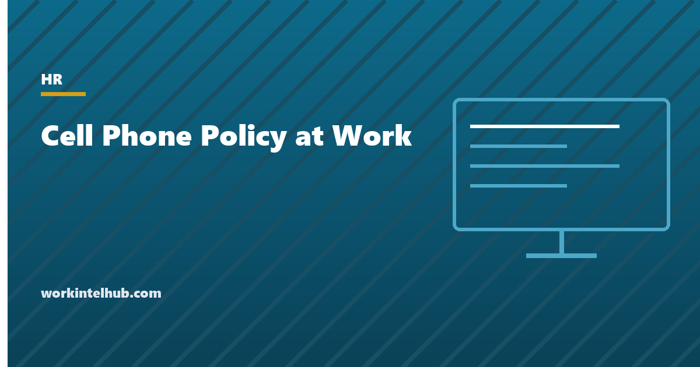

Cell Phone Policy at Work

A cell phone policy sets out when employees may use their phones at work, where use is restricted, and how phones used for work are handled. The hard part is not writing the restrictions; it is writing them narrowly enough to be lawful. Blanket bans on personal phones, on recording, or on using phones "for anything other than work" have all been found unlawful by the National Labor Relations Board because employees could read them as restricting the right to discuss and document working conditions. The policy that survives says what is restricted, where, and why, and says explicitly what it does not restrict.
The generator below produces that policy for five settings. The rest of the page covers the legal limits, the safety rules for drivers and floors, the recording question, the bring-your-own-device rules and stipends, and the after-hours line that keeps hourly staff's time recorded.
Cell phone policy generator
Nothing typed here leaves your browser. The policy avoids the blanket recording and "no personal use" language that the NLRB has found unlawful, and applies rest-break rules for hourly staff. Have it reviewed where state law adds requirements.
The legal limits
The National Labor Relations Act protects employees, union or not, when they act together about wages, hours and working conditions. The NLRB's Stericycle decision standard, adopted in August 2023, makes a work rule presumptively unlawful if an employee could reasonably read it as chilling that activity. The Board and its regional offices have applied the standard to phone rules directly. A ban on personal phones during the workday can prevent employees from communicating with each other about working conditions. A ban on recording can prevent them documenting unsafe conditions or unlawful statements. A rule requiring "professional use only" of any device can reach the same conduct. The employer has to show a legitimate interest that a narrower rule could not serve.
The narrower rules are available and the generator uses them. Personal phones are stored during working time in a specific area for a stated safety or service reason, with free use on breaks. Recording is restricted for named privacy and confidentiality reasons, with an express statement that documenting wages, hours and conditions is not restricted. And there is a rights clause. State law adds two more limits. Rest breaks required in several states (California, Washington, Colorado and others) must be genuinely free of duties, so a phone rule cannot apply to them. Recording laws in roughly a dozen states require all parties' consent, which the policy can note without turning it into a ban. The monitoring policy is the companion document where the employer's own access to company devices is set out.
Driving and floor safety
Distracted driving is where phone policies do their most important work. OSHA treats texting while driving on the job as a recognised hazard, and the Federal Motor Carrier Safety Administration bans handheld phone use and texting for commercial drivers outright, with fines for drivers and for employers who require or allow it. Around thirty states ban handheld use for all drivers and nearly all ban texting. The policy language that matters is the last sentence of the generator's driving clause: nobody will be expected to answer while driving, and nobody will be disciplined for not answering. An employer whose manager calls a driver and expects an answer has a policy on paper and a liability on the road.
On production floors, in warehouses and near vehicle traffic, the rule is stored phones in defined hazard areas and no use while operating equipment. Written for safety and applied to the area rather than to the person, it is the rule the NLRB standard permits. Pair it with the break rules so that phone time on breaks is unrestricted and the breaks themselves comply with state law.
Personal phones used for work
| Question | Rule |
|---|---|
| Must the employer pay? | California Labor Code 2802, Illinois, Iowa, Montana, New Hampshire and several other states require reimbursement of the reasonable business share of a personal phone plan when its use is required. A flat monthly stipend of $30 to $75 is the common approach; it is taxable unless paid under an accountable plan against a documented business share. |
| What may the employer access? | Only the work container or work accounts through a mobile device management profile. The policy should say plainly that personal data, photos, messages and location are not accessed; the location tracking guide covers what employees ask. |
| Security | Screen lock, current OS, the management profile, and a same-day report if the device is lost. The employer may remotely wipe its own data; a full-device wipe should require the employee's agreement in the policy. |
| Leaving | Work accounts removed, personal data untouched, stipend ends. Say so in the offboarding checklist. |
| Hourly employees | Work done on the phone outside hours is hours worked and must be recorded and paid. The policy's after-hours clause exists for this. |
Enforcing it without a grievance
- Private conversation first. A manager who confiscates a phone or announces the rule to the room has created the complaint.
- Performance, not possession. Excessive personal use in an office is a productivity conversation; the phone is incidental.
- Consistency. A rule enforced against the warehouse and not the office, or against one shift and not another, is the evidence in a claim.
- Safety violations are different. Phone use on a forklift or while driving is serious misconduct and the discipline policy can say so.
- Never search a personal phone. Without consent, and usually even with it, a search of a personal device exposes the employer to privacy claims under state law; the company-issued phone is the one that can be inspected.
Key takeaways
- Write restrictions narrowly, by area and reason, and state what is not restricted. Blanket bans on personal phones or recording are presumptively unlawful under the NLRB's 2023 standard.
- Breaks are unrestricted, and in states that mandate rest breaks the policy cannot apply to them.
- Driving: no handheld use on company business, and no employee is expected to answer while driving. Commercial drivers face a federal ban.
- Floors and sites: phones stored in defined hazard areas and never used while operating equipment.
- BYOD: a stipend where state law requires reimbursement, access limited to the work container, remote wipe of company data only, and accounts removed at exit.
- Hourly employees' phone work outside hours is paid time; the after-hours clause says so.
Frequently asked questions
Can an employer ban cell phones at work?
Not with a blanket rule. Under the NLRB's 2023 Stericycle standard a ban on personal phones during the workday is presumptively unlawful because it can restrict employees communicating about working conditions. Employers can require phones to be stored in specific areas for documented safety, privacy or service reasons, with free use on breaks.
Can an employer prohibit recording at work?
Not in general. Recording bans have been found unlawful because they can prevent employees documenting unsafe conditions or unlawful statements. A policy may restrict photographing or recording customers, patients, confidential data and secure areas, and may note that state law requires consent to record conversations, while stating that documenting wages, hours and working conditions is not restricted.
Does an employer have to pay for an employee's personal phone used for work?
In California, Illinois, Iowa, Montana, New Hampshire and several other states, yes: the reasonable business share must be reimbursed when the employer requires the use. A flat monthly stipend of $30 to $75 is the usual approach. Elsewhere it is not required but is common practice, and work done on the phone by hourly employees is paid time regardless.
What should a cell phone policy say about driving?
No handheld phone use while driving on company business, including in personal vehicles; pull over to take calls; a federal ban on handheld use and texting for commercial drivers; and, most importantly, that no employee is expected to answer while driving or will be disciplined for not doing so. Employers that pressure drivers to answer carry the liability.
Can my employer look at my personal phone?
Not without your consent, and searches of personal devices expose employers to privacy claims under state law even with it. On a personal phone used for work with a management profile, the employer can access and wipe its own work container but should not access personal data, photos, messages or location. A company-issued phone is company property and can be inspected.
Can hourly employees be required to answer work messages after hours?
Only if the time is recorded and paid. Time spent on work messages or calls outside scheduled hours is hours worked under the Fair Labor Standards Act. The policy should say that non-exempt employees are not expected to respond after hours unless scheduled on call, and must record any time they do work.